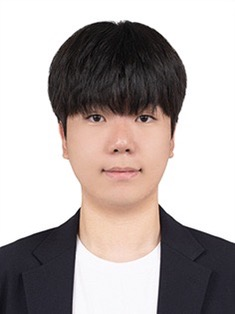

Minwoo Yang Software Engineer
"System Architect Driving Innovation in Manufacturing"
- Name: Minwoo Yang (양민우)
- Phone: +82-10-2456-5036
- Email: minwoo1006@gmail.com
As a software engineer with a solid foundation in computer science, I focus on system stability and efficiency. Through an internship at SEMES, I gained hands-on experience in software architecture for semiconductor OHT systems. My global experience, including IT volunteering in Uzbekistan and a summer session at UC Berkeley, has equipped me with strong communication skills and a proactive mindset. (수정할거임ㅎ)
Experience
SEMES
Software Development Intern
- Participated in developing diagnostic equipment software for OHT (Overhead Hoist Transport) systems.
- Implemented data processing logic using C/C++ in a Linux environment.
- Conducted system stability tests to meet rigorous manufacturing requirements.
Worldfriends Korea (WFK) IT Volunteers
Tashkent, Uzbekistan
- Lectured and mentored local university students on Machine Learning and Deep Learning (Python).
- Demonstrated global collaboration and technical communication skills by bridging language and cultural gaps.
UC Berkeley Summer Session
Data Science Course Completion
- Explored advanced data analysis methodologies in a global academic environment.
Technical Skills
Languages
Environment & Tools
Knowledge
Projects
애기랑 사랑하기
2025.12.07. - 죽는날
여기 이제 했던거 채울거임 다른것들은 그냥 예시에염ㅎㅎ
RL-based Optimization Project
Sep 2025 - Dec 2025
Implemented a model to find optimal paths in specific environments using Python and Reinforcement Learning algorithms.
Web Service Development
Mar 2025 - Jun 2025
Developed a board-style web application using Java Spring Boot and MySQL.
Education & Awards
DGIST (Daegu Gyeongbuk Institute of Science and Technology)
B.S. in Computer Science | Feb 2021 - Present
- GPA: 3.91 / 4.3 (Recipient of the Academic Excellence Award)
- Core Coursework: Algorithms, Computer Architecture, Operating Systems.
- 여기도 이제 상받았던거랑 이것저것 좀 채워봐야징